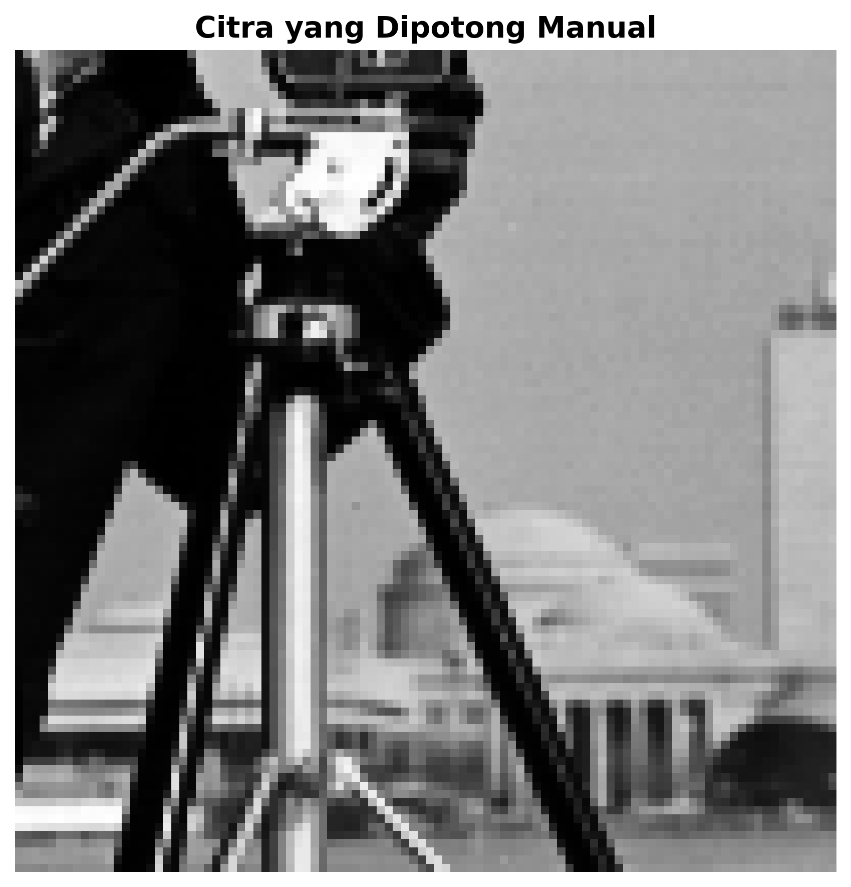
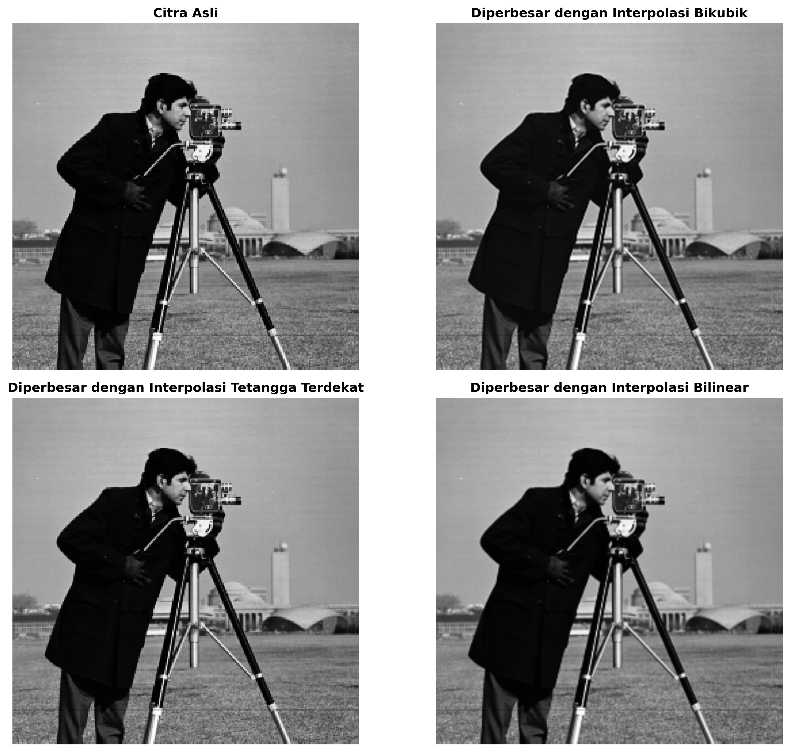
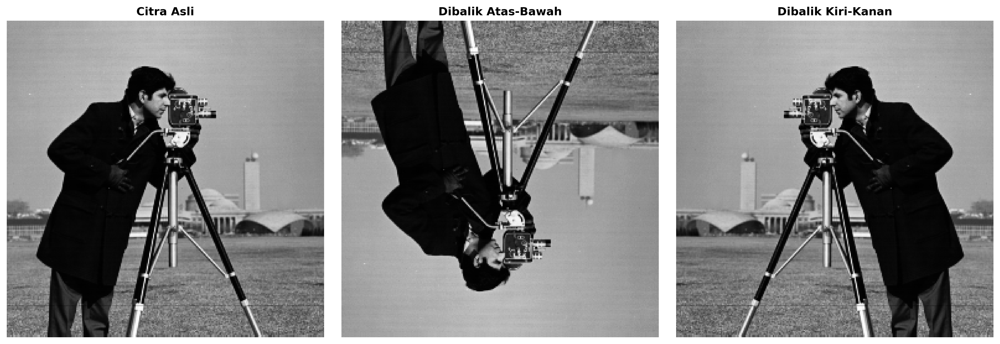

Tutorial ini membahas operasi-operasi dasar transformasi geometris pada citra digital, termasuk cropping (pemotongan), resizing (pengubahan ukuran), flipping (pencerminan), dan rotasi.
üéØ Konsep Kunci yang Dipelajari:
- Interpolasi Bilinear vs Bicubic untuk resizing
- Horizontal dan Vertical Flipping
- Rotasi dengan preservasi konten
- ROI (Region of Interest) selection
- Pixel manipulation dan coordinate transformation
Interpolasi Bilinear
Menggunakan 4 tetangga terdekat untuk menghitung nilai pixel baru dengan complexity O(1)
Interpolasi Bicubic
Menggunakan 16 tetangga terdekat untuk hasil yang lebih smooth dengan complexity O(1)
Matrix Rotation
Menggunakan rotation matrix 2x2 dengan cos(θ) dan sin(θ)

Citra Asli
Citra dasar yang digunakan untuk semua demonstrasi transformasi

Hasil Cropping
Demonstrasi cropping dengan ROI selection pada bagian tertentu citra

Perbandingan Interpolasi
Perbedaan kualitas antara interpolasi bilinear dan bicubic saat resizing

Demonstrasi Subsampling
Teknik pengurangan resolusi dengan memilih pixel secara selektif

Pengecilan dengan Interpolasi
Resizing menggunakan berbagai metode interpolasi untuk kualitas optimal

Demonstrasi Flipping
Horizontal flipping, vertical flipping, dan kombinasi keduanya

Demonstrasi Rotasi
Rotasi dengan berbagai sudut dan preservasi seluruh konten citra